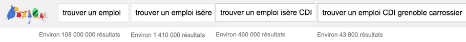

Des recherches efficaces
Il existe quelques techniques simples pour rendre vos recherches plus fructueuses. Découvrons ensemble quelques trucs et astuces !
Il existe quelques techniques simples pour rendre vos recherches plus fructueuses. Découvrons ensemble quelques trucs et astuces !
Vous obtiendrez toujours de meilleurs résultats si vous recherchez quelque chose de clair, en tapant dans votre recherche le nom de la ville, du département. Par exemple :
Regardons l’évolution du nombre de résultats au fur et à mesure que notre requête se précise :

Vous n’êtes pas obligé de chercher un seul mot clé à la fois, n’hésitez pas même à taper des phrases complètes dans vos recherches :